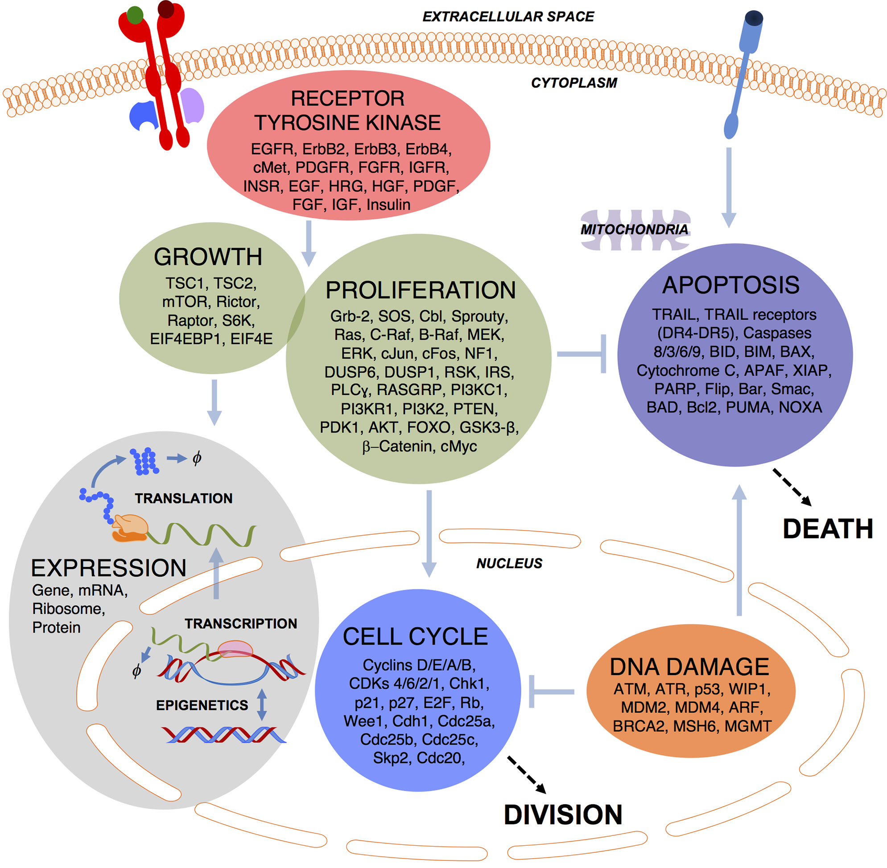

SPARCED: Large-Scale Human Cell Mechanistic Modeling#
SPARCED
Large-Scale Human Cell Mechanistic Modeling
SPARCED is one of the largest mechanistic models of a human cell in the literature. Its modeling pipeline is open-source and serves for creating and simulating cellular pathway models.

Contribute#
SPARCED is an ongoing project that is continuously expanded by the community. Extensions of the original model and additional pathway models are very welcome. See our contribution guide to learn more about the process. If you have a question, do not hesitate to contact us.
Contributions to the development of SPARCED and issue reports are very welcome on our GitHub repository. Technical documentation is available in the developers guide. If you have a question, do not hesitate to contact us.
Institutional Partners#
The following institutions support the development and maintenance of SPARCED:
Citation#
Please cite SPARCED using